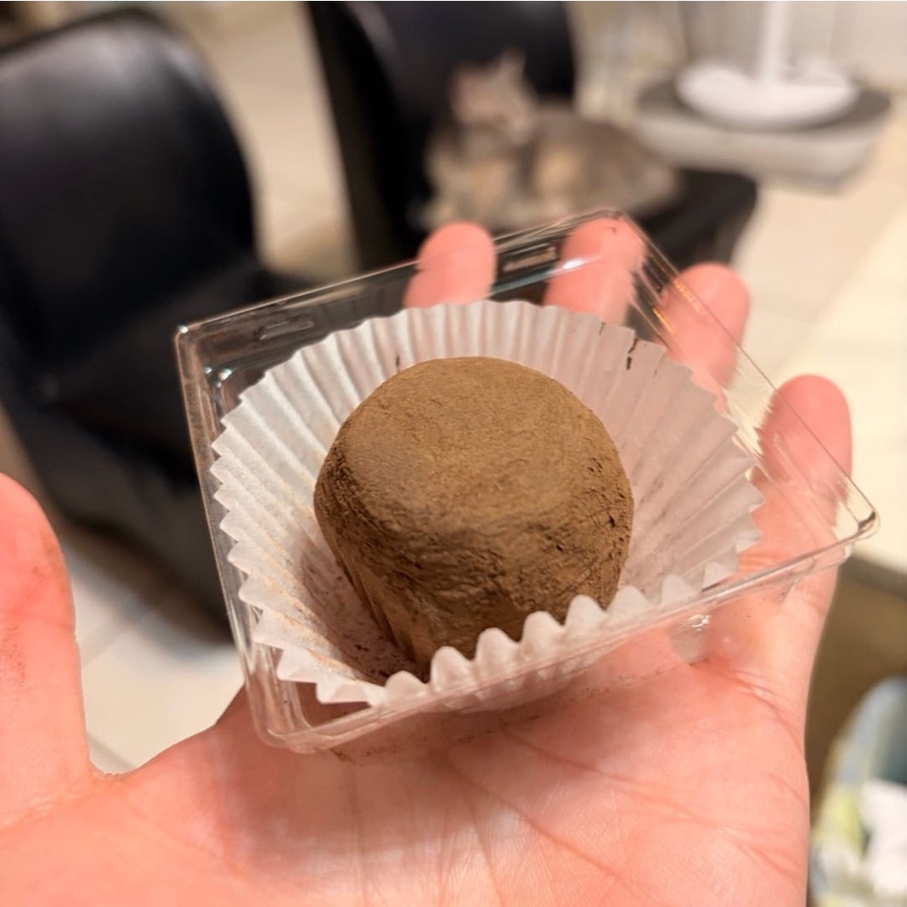

食客找到真實在地選擇
用附近探索、Google Maps 地圖模式、地區篩選與可領優惠券，讓「今天吃什麼」更快變成行動。
凱洛斯智慧科技｜餐飲科技平台
連接在地食客社群與餐廳營運工具。
Diner App 幫食客探索地圖、領優惠券、整理食物地圖與補齊店家資料；Merchant App 幫餐廳免費認領店面，開通營運方案後接單、控配額，並製作 AI 圖文素材。
對食客來說，這是一個用搜尋、地圖、優惠券、食物地圖與真實內容找店的 Diner App。對餐廳來說，這是一套從免費認領店家頁開始，逐步進到接單、配額、優惠券與 AI 圖文的 Merchant App。
用附近探索、Google Maps 地圖模式、地區篩選與可領優惠券，讓「今天吃什麼」更快變成行動。
使用者可以新增店家、補照片、補營業時間、寫評論，讓店家頁從社群資料逐步變得可被信任。
餐廳可以免費拿回店家頁，管理優惠券與公開資訊，開通營運方案後再接單、控配額與做 AI 圖文。
平台的核心不是單次流量，而是讓食客資料、店家營運與社群回饋持續轉動。
用搜尋、地圖、地區與優惠券找到附近想吃的店，並把店加入食物地圖。
補店家資料、拍菜單、寫評論與發美食紀錄，讓店家頁越來越完整。
餐廳從 Merchant App 認領店家頁，確認資料、管理照片、菜單與優惠券。
開通營運方案後接單、控配額、代客下單，並用 AI 圖文維持行銷節奏。
Diner App 目前聚焦在真實找店與社群共建。你可以用探索頁搜尋店名與餐點、切換 Google Maps 地圖模式、查看附近或指定地區可領優惠券，也可以把店收藏進食物地圖，或補上店家照片、菜單與營業資訊。
中原商圈 · 台式 · $100-250 · 今日可用
搜尋店名、餐點、料理類型與地區，並用 Google Maps 模式直接看目前視野中的店家。
瀏覽附近或指定地區可領券，領取後到店使用；已開通店家也能進入下單與訂單追蹤。
整理想吃、吃過與跟單清單，也能邀請朋友共同維護一份在地口袋名單。
新增店家、補照片、補營業時間與寫評論，讓早期貢獻者在排行榜與 XP 系統中被看見。
Merchant App 從店家最需要的事開始：把 Diner 上的公開店家頁拿回來、整理營業資訊與優惠券。準備開始營運時，再開通接單、配額、代客下單與 AI 圖文工具。
店家可搜尋既有社群店家並用 SMS OTP 認領，也能在找不到時建立新店家。
管理店家資料、營業時間、封面相簿、菜單照片、招牌料理、公開頁預覽與 QR 分享。
建立優惠價格、免費券、數量、領取期限、使用期限與核銷碼，並同步到 Diner 領券流程。
營運方案支援接單、訂單訊息、日曆檢視、備料配額與現場 / 電話訂單的代客下單。
免費店家看店家頁完整度與整理建議；營運方案店家看待處理訂單、配額與行銷提醒。
製作 AI 貼文、菜單照片、漂亮餐點照與趣味宣傳圖，並集中管理待發布與已發布素材。
主軸是 Merchant 的 AI 圖文與店面營運；短影音先保留為次要展示案例。

AI 圖片工具
保留餐點主角，整理光線、背景與構圖，讓店家的日常素材更適合社群、菜單與活動頁使用。
次要案例｜短影音 Demo
從餐點賣點、腳本到素材方向，協助店家更快整理可測試的短影音內容；正式服務會依店家需求另行規劃。
Diner 給食客探索與領券；Merchant 給餐廳認領店面、管理優惠券與營運工具。
給食客使用：探索地圖、優惠券、食物地圖、評論與店家資料共建。
給餐廳使用：免費認領、店面資料、優惠券、訂單配額與 AI 圖文素材。
目前產品重心是把店家資料、食客貢獻、優惠券與店家認領串起來。Season 0 先從指定區域啟動資料共建，接著用可複製的商圈 playbook 擴展到更多城市。
用排行榜、XP 與任務引導早期使用者補店家照片、菜單、營業時間與特色資料。
把 Diner 端已建立的社群店家，導向 Merchant 端免費認領、整理店面與發放優惠券。
讓準備營運的店家開通接單、配額、代客下單與 AI 圖文工具，建立可收費的商家流程。
把已驗證的城市與商圈流程複製到更多餐飲密集區，服務單店、商圈店與多店品牌。
我們正在打造一個從在地食客社群出發、再回到餐廳營運現場的餐飲科技平台。美食抵家從餐飲開始，因為這裡有大量日常決策、在地關係與店家數位化需求。
美食抵家的商務開發與產品工作由兩位共同創辦人直接推進，從找店合作、產品規劃到開發都親自下場。
共同創辦人／商務開發
負責尋找店家合作機會，直接了解老闆的經營需求與現場卡點。
我們正在尋找願意一起打造新餐飲成長模式的店家、商圈夥伴、加速器與投資人。